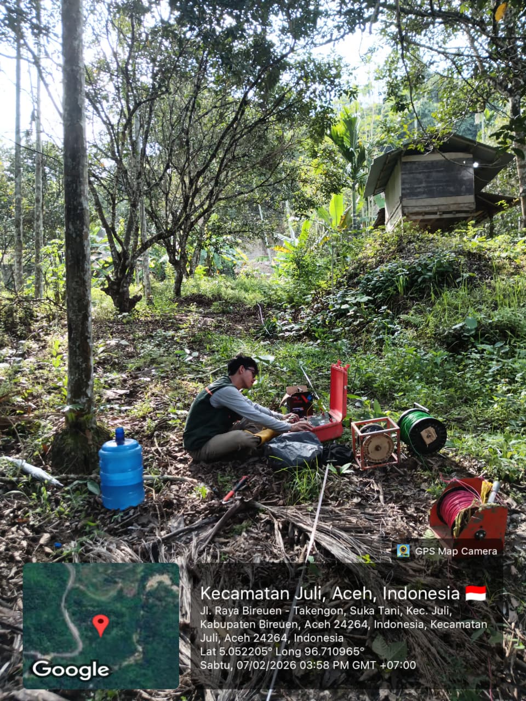
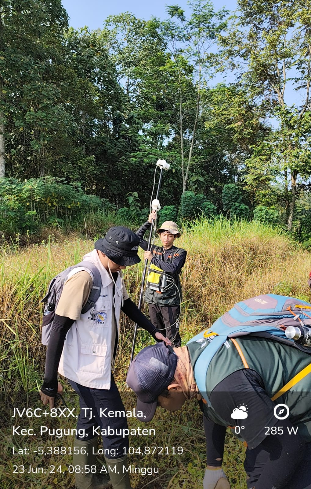
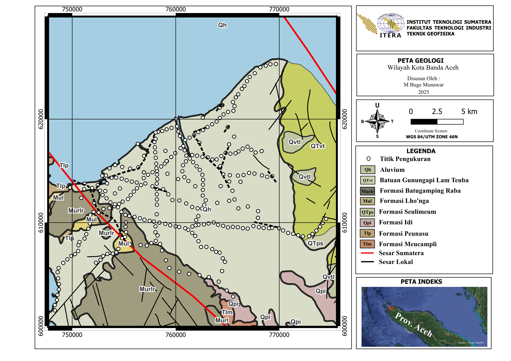
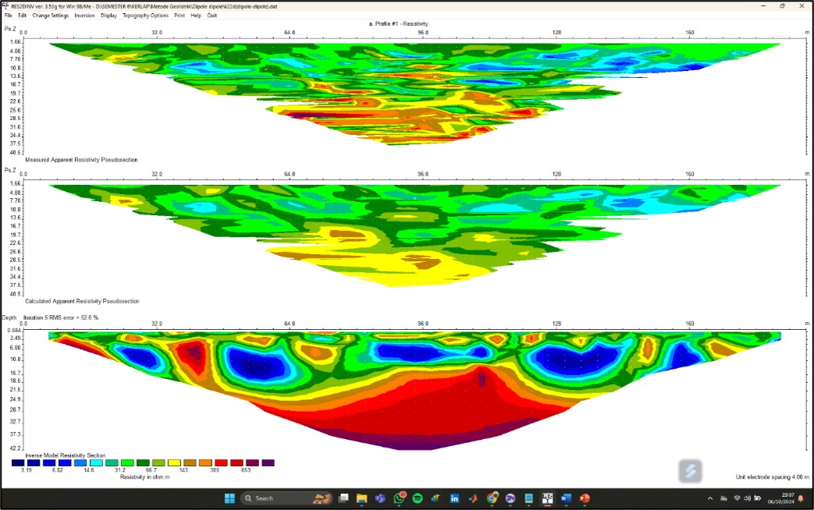

Geophysics graduate from Institut Teknologi Sumatera.
Geophysics graduate from Institut Teknologi Sumatera with experience in ERT Survey, Gravity Method, Geological Mapping and Data Processing.
Passionate in Electrical Resistivity Tomography (ERT), Gravity Method, Geological Mapping and Subsurface Interpretation.
Geophysics graduate from Institut Teknologi Sumatera (ITERA) with experience in Electrical Resistivity Tomography (ERT), gravity surveys, geological mapping, data interpretation, and geophysical field investigations.

Electrical Resistivity Tomography survey for landslide investigation in Bireuen – Takengon area.

Gravity data acquisition and interpretation for geological structure identification.

Regional and residual anomaly analysis for geological interpretation.

2D inversion modelling and subsurface characterization.
Geophysical Survey Project
HAGI SC ITERA
Madani ITERA
HMTG Mayapada
Email: buge1408@gmail.com
LinkedIn: linkedin.com/in/mbuge
WhatsApp: +62 822-7325-2420